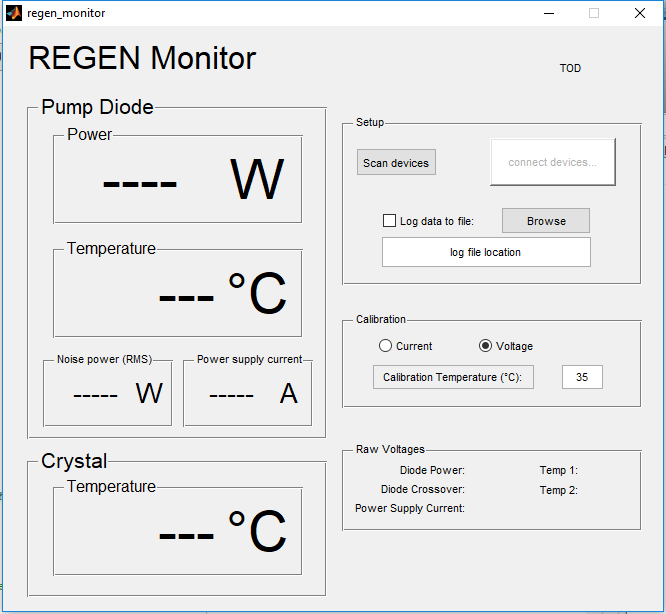

function varargout = regen_monitor(varargin)
gui_Singleton = 1;
gui_State = struct('gui_Name', mfilename, ...
'gui_Singleton', gui_Singleton, ...
'gui_OpeningFcn', @regen_monitor_OpeningFcn, ...
'gui_OutputFcn', @regen_monitor_OutputFcn, ...
'gui_LayoutFcn', [] , ...
'gui_Callback', []);
if nargin && ischar(varargin{1})
gui_State.gui_Callback = str2func(varargin{1});
end
if nargout
[varargout{1:nargout}] = gui_mainfcn(gui_State, varargin{:});
else
gui_mainfcn(gui_State, varargin{:});
end
function [e,msg] = scanDev(hObject, handles)
if isfield(handles, 'lh') || isfield(handles, 'session')
stopMon(handles.figure1)
handles = guidata(handles.figure1);
handles = rmfield(handles, 'session');
end
guidata(handles.figure1,handles);
try
device = daq.getDevices;
catch err
errordlg(['Error retrieving device list: ' err.identifier]);
e = -1;
msg = ['Error retrieving device list: ' err.identifier];
return
end
if isempty(device)
e = 0;
msg = 'No devices found';
return
end
k = strcmpi('National Instruments USB-6009', device.Description);
if all(k==0)
e = 0;
msg = 'USB-6009 not found';
return
end
index = find(k);
index = index(1);
vendor = device(index).Vendor.ID;
devID = device(index).ID;
s = daq.createSession(vendor);
s.Rate = handles.sampleRate;
s.IsContinuous = true;
[pwrCh, handles.pwrIdx] = addAnalogInputChannel(s, devID, 'ai7', 'Voltage');
pwrCh.Name = 'DiodePower';
pwrCh.InputType = 'SingleEnded';
pwrCh.Range = [-10,10];
[crvCh, handles.crvIdx] = addAnalogInputChannel(s, devID, 'ai3', 'Voltage');
crvCh.Name = 'DiodeCrossover';
crvCh.InputType = 'SingleEnded';
crvCh.Range = [-10,10];
[tmp1Ch, handles.tmp1Idx] = addAnalogInputChannel(s, devID, 'ai1', 'Voltage');
tmp1Ch.Name = 'Temperature1';
tmp1Ch.InputType = 'SingleEnded';
tmp1Ch.Range = [-10,10];
[tmp2Ch, handles.tmp2Idx] = addAnalogInputChannel(s, devID, 'ai5', 'Voltage');
tmp2Ch.Name = 'Temperature2';
tmp2Ch.InputType = 'SingleEnded';
tmp2Ch.Range = [-10,10];
[pscCh, handles.pscIdx] = addAnalogInputChannel(s, devID, 'ai2', 'Voltage');
pscCh.Name = 'PowerSupplyCurrent';
pscCh.InputType = 'Differential';
pscCh.Range = [-10, 10];
handles.session = s;
guidata(handles.figure1,handles);
set(handles.monToggle, 'BackgroundColor', [0,1,0]);
set(handles.monToggle, 'String', 'Start monitor');
set(handles.monToggle, 'Enable', 'on');
e = 1;
msg = 'Setup successful';
return
function startMon(hObject)
handles = guidata(hObject);
if ~isfield(handles, 'session')
errordlg('Error starting monitors: No session ID', 'Session Start Error')
return
end
if get(handles.logCheck, 'Value') == 1
status = ovrwrtChecker(handles.figure1);
switch status
case 0
set(handles.monToggle, 'Value', 0);
return
case 1
logData(handles,[]);
case 2
otherwise
set(handles.monToggle, 'Value', 0);
return
end
end
handles.session.NotifyWhenDataAvailableExceeds = handles.avgN;
handles.lh = addlistener(handles.session, 'DataAvailable', @(scr, event) updateDisplays(scr, event, hObject));
startBackground(handles.session);
guidata(hObject,handles);
set(handles.logCheck, 'Enable', 'off');
set(handles.logFilename, 'Enable', 'off');
set(handles.browseFileButton, 'Enable', 'off');
set(handles.monToggle, 'BackgroundColor', [1,0,0]);
set(handles.monToggle, 'String', 'Stop Monitor');
function stopMon(hObject)
handles = guidata(hObject);
if isfield(handles, 'session')
stop(handles.session);
end
if isfield(handles,'lh')
delete(handles.lh)
handles = rmfield(handles, 'lh');
end
guidata(hObject,handles);
set(handles.logCheck, 'Enable', 'on');
set(handles.logFilename, 'Enable', 'on');
set(handles.browseFileButton, 'Enable', 'on');
set(handles.monToggle, 'BackgroundColor', [0,1,0]);
set(handles.monToggle, 'String', 'Start Monitor');
if get(handles.monToggle, 'Value') == 1
set(handles.monToggle, 'Value', 0);
end
function updateDisplays(src, event, hObject)
handles = guidata(hObject);
pwrVlt = mean(event.Data(:,handles.pwrIdx));
crvVlt = mean(event.Data(:,handles.crvIdx));
tmp1Vlt = mean(event.Data(:,handles.tmp1Idx));
tmp2Vlt = mean(event.Data(:,handles.tmp2Idx));
pscVlt = mean(event.Data(:,handles.pscIdx));
pwrVltStd = std(event.Data(:,handles.pwrIdx));
set(handles.dpvDisp, 'String', num2str(pwrVlt,'%.4f'));
set(handles.dcvDisp, 'String', num2str(crvVlt,'%.4f'));
set(handles.pcvDisp, 'String', num2str(pscVlt,'%.4f'));
set(handles.t1vDisp, 'String', num2str(tmp1Vlt,'%.4f'));
set(handles.t2vDisp, 'String', num2str(tmp2Vlt,'%.4f'));
cal2use = get(get(handles.calibrationPanel, 'SelectedObject'),'String');
if pwrVlt <= 0.01
curPow = 0;
elseif strcmpi(cal2use, 'Voltage')
curPow = polyval(handles.pwrCalCoef,pwrVlt);
elseif strcmpi(cal2use, 'Current')
curPow = polyval(handles.pwrEstCoef,pscVlt);
else
display('Check calibration!!! Wrong part of calibration ifs')
curPow = polyval(handles.pwrEstCoef,pscVlt);
end
powStr = num2str(curPow,'%.1f');
set(handles.pwrDisp, 'String', powStr);
if pscVlt <0.002
curPsc = 0;
else
curPsc = polyval(handles.pscCalCoef, pscVlt);
end
pscStr = num2str(curPsc,'%4.2f');
set(handles.pscDisp, 'String', pscStr);
curCrv = curPow*(pwrVltStd/pwrVlt);
crvStr = num2str(curCrv,'%.4f');
set(handles.dnpDisp, 'String', crvStr);
curTmp1 = (tmp1Vlt - handles.tmp1Ofs)/handles.tmp1Cal;
if curTmp1 <= handles.tmpDng1(1) || curTmp1 >= handles.tmpDng1(2)
tmpCol = handles.dngCol;
elseif curTmp1 <= handles.tmpWrn1(1) || curTmp1 >= handles.tmpWrn1(2)
tmpCol = handles.wrnCol;
else
tmpCol = handles.safeCol;
end
set(handles.tmp1Disp, 'String', num2str(curTmp1,'%.1f'));
set(handles.tmp1Disp, 'ForegroundColor', tmpCol);
curTmp2 = (tmp2Vlt - handles.tmp2Ofs)/handles.tmp2Cal;
if curTmp2 <= handles.tmpDng2(1) || curTmp2 >= handles.tmpDng2(2)
tmpCol = handles.dngCol;
elseif curTmp2 <= handles.tmpWrn2(1) || curTmp2 >= handles.tmpWrn2(2)
tmpCol = handles.wrnCol;
else
tmpCol = handles.safeCol;
end
set(handles.tmp2Disp, 'String', num2str(curTmp2,'%.1f'));
set(handles.tmp2Disp, 'ForegroundColor', tmpCol);
set(handles.todText, 'String', datestr(now, 'dd-mmm-yyyy HH:MM:SS'));
if get(handles.logCheck, 'Value') == 1
i = handles.logNum;
if mod(i,handles.refreshRate) == 0
logData(handles,[(event.TriggerTime + mean(event.TimeStamps)/86400),curPsc,curPow,curCrv,curTmp1,curTmp2]);
end
handles.logNum = i+1;
guidata(hObject,handles);
end
function logData(handles, data)
if isempty(data)
fileid = fopen(get(handles.logFilename, 'String'), 'wt');
fprintf(fileid, '%s\n', datestr(now, 'dd-mmm-yyyy HH:MM:SS'));
fprintf(fileid, 'REGEN System Monitor\n\n');
fprintf(fileid, 'Sampling rate =\t%.3f Hz\n', handles.sampleRate);
fprintf(fileid, 'Number of samples averaged =\t%.0f\n', handles.avgN);
fprintf(fileid, 'Power Calibration (a0...aN):\t%s\n', sprintf('%.4f\t', handles.pwrCalCoef));
fprintf(fileid,'\n%23s\t%8s\t%8s\t%8s\t%8s\t%8s\n','Time','Current','Power','Crossover', 'T1', 'T2');
fprintf(fileid,'%23s\t%8s\t%8s\t%8s\t%8s\t%8s\n','yyyy/mm/dd hh:mm:ss.fff','(A)','(W)','(ratio)', '(degC)', '(degC)');
fclose(fileid);
else
if length(data) < 6
data = [data, zeros(6-length(data))];
end
fileid = fopen(get(handles.logFilename, 'String'), 'at');
fprintf(fileid,'%23s\t%8.4f\t%8.3f\t%8.5f\t%8.2f\t%8.2f\n', datestr(data(1), 'yyyy/mm/dd HH:MM:SS.FFF'),data(2:6));
fclose(fileid);
end
function status = ovrwrtChecker(mainFigure)
handles = guidata(mainFigure);
[path,name,ext] = fileparts(get(handles.logFilename, 'String'));
status = 0;
if exist(fullfile(path,[name ext]),'file') == 2
buttonName = questdlg(sprintf('File already exists. Overwrite?\nCancel to change file.'), 'Path warning', 'Overwrite', 'Append file', 'Disable log', 'Disable log');
switch buttonName
case 'Append file'
status = 2;
case 'Overwrite'
status = 1;
case 'Disable log'
set(handles.logCheck, 'Value', 0);
status = 1;
otherwise
set(handles.logCheck, 'Value', 0);
status = 0;
end
else
status = 1;
end
function setCalibration(mainFigure)
handles = guidata(mainFigure);
temp = handles.diodeCalTemp;
cal_temp = [20,25,30,35];
voltage_cal_coef = [...
[0.09364815449 -1.303392134 22.00926798 2.175942706];...
[0.3715309952 -3.340790084 24.86181978 0.7029328495];...
[0.487521366 -3.639501926 23.90466826 0.262408398];...
[0.3162068009 -2.021543564 20.24440997 1.148156743]];
current_cal_coef = [...
[4.612008094 -9.575995553];...
[4.478570276 -9.753289314];...
[4.416482464 -10.57545691];...
[4.396149062 -11.30721815]];
psc_cal_coef = handles.pscCalCoef;
output_voltage_coef = interp1(cal_temp,voltage_cal_coef,temp, 'linear', 'extrap');
current_coef = interp1(cal_temp,current_cal_coef,temp, 'linear', 'extrap');
output_current_coef = [current_coef(1)*psc_cal_coef(1), current_coef(2)+current_coef(1)*psc_cal_coef(2)];
handles.pwrCalCoef = output_voltage_coef;
handles.pwrEstCoef = output_current_coef;
guidata(mainFigure,handles);
function regen_monitor_OpeningFcn(hObject, eventdata, handles, varargin)
handles.output = hObject;
handles.pwrCalCoef = [0.4315403228 28.14068064 -3.770681968 0.4096289863];
handles.pwrEstCoef = [30.76897313 -11.93860021];
handles.pscCalCoef = [5.977168596 0.009309869398];
handles.diodeCalTemp = 35;
handles.crvWrn = 0.8;
handles.crvDng = 1;
handles.tmp1Cal = 0.00499;
handles.tmp1Ofs = 1.2370;
handles.tmp2Cal = 0.004905;
handles.tmp2Ofs = 1.2335;
handles.tmpWrn1 = [25,40];
handles.tmpDng1 = [20,45];
handles.tmpWrn2 = [10,20];
handles.tmpDng2 = [05,25];
handles.avgN = 1000;
handles.refreshRate = 5;
handles.logNum = 0;
handles.dngCol = [.75 0 0];
handles.wrnCol = [.75 .5 0];
handles.safeCol = [.25 .5 0];
maxSampleRate = 9600;
handles.sampleRate = handles.avgN*handles.refreshRate;
if handles.sampleRate >= maxSampleRate
handles.sampleRate = maxSampleRate;
handles.refreshRate = handles.sampleRate/handles.avgN;
end
guidata(hObject, handles);
setCalibration(handles.figure1);
function varargout = regen_monitor_OutputFcn(hObject, eventdata, handles)
varargout{1} = handles.output;
function tmp1Unit_CreateFcn(hObject, eventdata, handles)
set(hObject, 'String', [char(176),'C'])
function scanBtn_Callback(hObject, eventdata, handles)
[e,msg] = scanDev(hObject, handles);
switch e
case -1
errordlg(msg, 'Connection Error');
case 0
msgbox(msg,'Connection Error', 'warn');
case 1
otherwise
errordlg(['Unknown error occured: ' msg], 'Connection Error');
end
function monToggle_Callback(hObject, eventdata, handles)
button_state = get(hObject,'Value');
if button_state == get(hObject, 'Max')
startMon(handles.figure1);
elseif button_state == get(hObject, 'Min')
try
stopMon(handles.figure1);
catch err
errordlg(['Error stoping monitors: ' err.identifier], 'Monitor Error');
end
end
function logCheck_Callback(hObject, eventdata, handles)
if get(hObject, 'Value') == 1
[path,name,ext] = fileparts(get(handles.logFilename, 'String'));
while exist(path, 'dir') ~= 7
[fileName, pathName] = uiputfile( '*.txt', 'Invalid save location', 'D:\Miller Group Users');
if pathName == 0
set(handles.logCheck, 'Value', 0);
break;
end
set(handles.logFilename,'String',[pathName,fileName]);
[path,name,ext] = fileparts(get(handles.logFilename, 'String'));
end
end
function logFilename_Callback(hObject, eventdata, handles)
logCheck_Callback(handles.logCheck, eventdata, handles);
function logFilename_CreateFcn(hObject, eventdata, handles)
if ispc && isequal(get(hObject,'BackgroundColor'), get(0,'defaultUicontrolBackgroundColor'))
set(hObject,'BackgroundColor','white');
end
function browseFileButton_Callback(hObject, eventdata, handles)
[fileName, pathName] = uiputfile( '*.txt', 'Save file', 'D:\Miller Group Users');
set(handles.logFilename,'String',[pathName,fileName]);
logCheck_Callback(handles.logCheck, eventdata, handles);
function calTempEdit_Callback(hObject, eventdata, handles)
temp = str2double(get(hObject,'String'));
if isnan(temp)
set(hObject, 'String', num2str(handles.diodeCalTemp));
else
handles.diodeCalTemp = temp;
end
guidata(handles.figure1,handles);
setCalibration(handles.figure1);
function calTempEdit_CreateFcn(hObject, eventdata, handles)
if ispc && isequal(get(hObject,'BackgroundColor'), get(0,'defaultUicontrolBackgroundColor'))
set(hObject,'BackgroundColor','white');
end
function calibrationPanel_SelectionChangeFcn(hObject, eventdata, handles)
